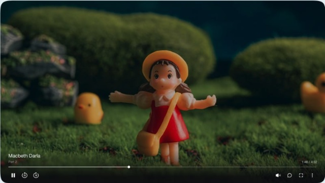

Рекомендуемый размер 1200×675 или квадрат. Форматы JPG, PNG, WebP.

Выберите, как трек должен воспроизводиться в интерактивном плеере.
Фоновая гармония, пэды, текстуры
Ведущая мелодия, скрипки, соло-инструменты
Шуршание, капли, перкуссия, атмосфера
Глубокий бас, суб-орган, низкие частоты
Будет выполнен автоматический коммит и отправка всех файлов обложек, аудио и плейлиста в ветку main репозитория Djoystick/Spiraleye.
main